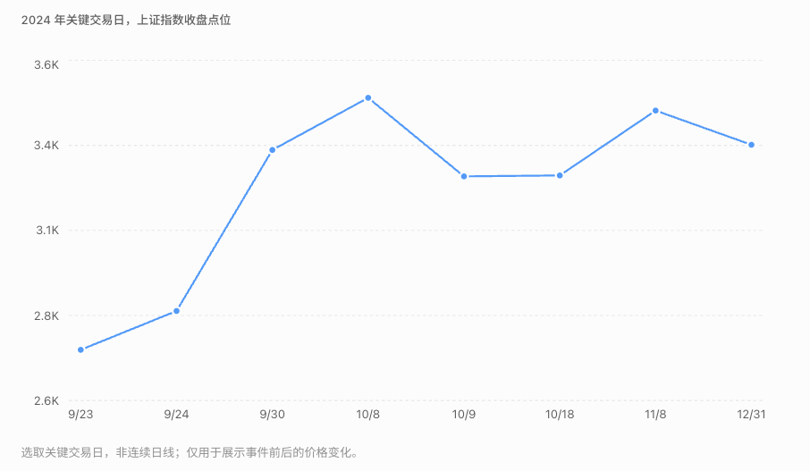

阶段总览 · 2024 全年回顾 · 后续：2025—2026
924 行情首先是一轮风险偏好突然修复的行情：市场从“没人愿意买”，迅速变成“怕买不到”。 券商和金融科技是最直接的交易载体，地产消费先参与普涨，随后科技、鸿蒙和重组继续分化。国庆前持有、10 月 8 日高位追入与 10 月 9 日才入场，结果完全不同。
一、指数到底怎样走：把日期与买入价格放在一起
| 时间 | 指数表现 | 投资者当时的处境 |
|---|---|---|
| 9 月 24 日 | 上证上涨 4.15%。 | 政策超预期，原先低仓位和观望资金开始回补。 |
| 9 月 25—30 日 | 连续快速上涨，9 月 30 日上证收于约 3336 点。 | 节前交易窗口缩短，踏空焦虑和抢筹增强。 |
| 10 月 8 日 | 上证高开冲高后收涨 4.59%；创业板收涨 17.25%。 | 假期积累的乐观预期集中释放，开盘价格已经反映大量利好。 |
| 10 月 9 日 | 上证下跌 6.62%至 3258.86 点；创业板下跌 10.59%。 | 大部分股票回撤，追高与持仓浮盈的感受截然不同。 |
| 随后至年末 | 市场震荡，科技、金融、重组等反复分化。 | 重新比较增长、估值与政策执行，不再是节前普涨速度。 |
10 月 9 日行情见新华财经收盘报道。上证 2024 全年上涨12.67%，那是全年口径，不是924买入者都能获得的收益。
原有行情图片保留供对照；图片的统计区间和复权口径需与正文分开看。

二、哪些板块先涨，哪些股票最有辨识度
| 方向 | 代表股票 | 为什么在这轮行情里有弹性 |
|---|---|---|
| 券商 | 中信证券、东方财富、天风证券、国海证券 | 市场成交、融资与投资者活跃，直接影响业务和盈利预期。 |
| 金融科技 | 银之杰、同花顺、恒银科技等 | 交易活跃、金融改革和弹性主题，也有概念映射。 |
| 地产与消费 | 金融街、地产链、白酒等阶段参与 | 房贷、首付与稳增长政策改善预期，首先进行估值修复。 |
| 鸿蒙与科技 | 常山北明、润和软件等 | 自主软件与产品催化，叠加上涨后的风险偏好。 |
| 重组 | 双成药业等 | 新资产与转型预期，行情启动并不完全由924造成。 |
10 月 8 日可以看到金融股集中涨停，天风等连续涨停，银之杰、常山北明和双成等处在不同的高热度阶段。来源：证券时报涨停与连板统计。
这里不能把“牛股”都算作政策当天从零启动。双成重组有自己的公告时间，鸿蒙也有产业事件；924放大了风险偏好，使原有题材更容易获得新资金。
三、哪些方向跌，为什么普涨后还会亏
10 月 9 日是大范围回撤，不是只有弱公司跌。价格在短时间计入大量乐观预期，获利盘兑现、追涨减少和止损叠加，前期弹性越大的股票越容易出现剧烈波动。
但个股也不完全同步：当天东方财富仍收涨，成交非常大。这说明“指数大跌”与“最受关注股票仍有资金换手”可以并存，不能把所有股票都当作一个动作。来源：北京商报当日复盘。
更长时间看，地产消费等最初的普涨，并没有自动成为持续增长。地产要验证销售和回款，白酒要看动销与库存；科技要看订单与产品，重组要看交易完成。政策让投资者愿意重新估值，但没有使这些经营问题同时消失。
这也是为什么应把两类“弱”区分：10 月初是交易层面的广泛回撤；后续是行业和公司基本面分化。前者更看价格、仓位和买盘，后者更看利润和回报。
四、924到底公布了什么，怎样传到股票
| 政策 | 当时宣布的主要内容 | 最直接的传导 |
|---|---|---|
| 降准 | 下调0.5个百分点，提供约1万亿元长期流动性。 | 改善银行体系资金条件。 |
| 降政策利率 | 7天逆回购利率由1.7%调到1.5%。 | 降低资金成本、支持融资与估值。 |
| 存量房贷利率调整 | 引导下降，预计平均约0.5个百分点。 | 减轻居民还款负担，支持需求。 |
| 二套房首付 | 全国层面最低比例由25%降至15%。 | 降低购房门槛，影响地产预期。 |
| 证券基金保险互换便利 | 首期5000亿元。 | 合格机构用资产换取高流动性资产，再通过融资配置股票。 |
| 回购增持再贷款 | 首期3000亿元。 | 通过银行贷款支持公司回购与股东增持。 |
政策内容与额度来自9月24日国新办发布会。宣布、正式设立、申请和实际操作不是同一天，也不是同一金额。
最有辨识度的是后两项：除了支持银行和实体融资，还新增面向股票市场的融资路径。市场因此重新估计极端下跌时的承接能力，风险补偿可以先下降，价格可以先上涨。
但5000亿加3000亿不是央行当天直接购买8000亿股票。互换有资产条件、成本和融资步骤，回购贷款还要有银行授信与实际执行。额度、申请、操作与最终买股需要分别记录。
五、不同参与者到底在博弈什么
原先低仓位的机构：落后市场的风险突然变大
如果原来判断市场疲弱、仓位低，政策改变后就需要重新配置。回补可以发生在企业利润尚未改善时，因为市场风险环境已经变化。若反弹很快，追赶基准的压力还会加快买入。
游资：用最直接的“牛市受益股”表达观点
券商和金融科技容易被所有人理解，涨停又强化龙头地位。资金先选辨识度最高的股票，其他金融、互联网和重组题材跟随。后段即使没有更多利润消息，也可能因为接力热情继续涨。
居民：过去的亏损记忆，被短期赚钱示范替代
连续大涨和假期信息传播，让观望者担忧错过大机会。假期内无法交易，新增意愿集中到节后开盘，实际成交价格可能远高于节前。看到别人节前获利，与自己节后买入，并不是同一笔投资。
获利盘与新买方：对同一政策，能接受的价格不同
节前持有人可以兑现较大浮盈，新买方则需要更高价格才成交。10月8日高开时，市场已经把很多假期乐观提前反映，继续上涨需要新的边际信息和买盘。后来回撤，不必先有政策反转。
六、这段行情的深层逻辑
第一段是风险溢价修复：过去过度悲观的资产获得重新报价。第二段是价格反馈：上涨吸引追涨、追涨继续推动价格。第三段才是重新选择：资金开始区分真实订单、现金回报和只有故事的公司。
它与2008年的对照很有价值：两次都有政策转向，但2008更直接对应基建实物需求，924还新增股票市场融资支持；当时的估值、资金结构和产业环境也不同，不能照搬过去反弹幅度。
对投资者，最应留下的不是“政策出来就追”或“涨快了就一定跌”，而是明确自己买的是哪一段：悲观修复、情绪接力，还是后续盈利。三者需要不同证据，也承担不同的买入价格风险。
七、后续怎样验证，避免倒写历史
| 当时的判断 | 后来需要核对什么 |
|---|---|
| 新工具能增加承接 | 实际操作、机构参与、贷款和回购执行。 |
| 地产消费会恢复 | 成交、回款、收入、库存与居民需求。 |
| 科技重组会形成新价值 | 订单、财报、交易对价、交割与整合。 |
| 市场已经有持续增量资金 | ETF净申购、基金申赎、融资与投资者资金。 |
ETF成交额很大不等于新增申购，开户多不等于资金全部买入，工具额度大也不等于全部使用。把这些量分开，才能判断政策预期有没有转成持续买盘。
2025—2026年的行业与盈利变化另见后续回顾。不把后来成功的行业，倒写成2024年9月每个投资者都能预先确认的答案。